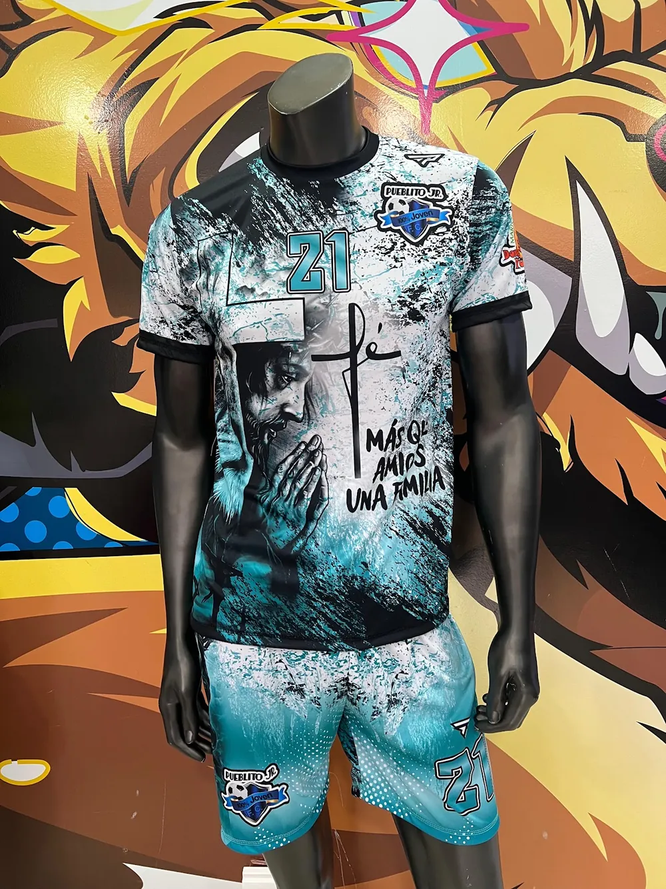
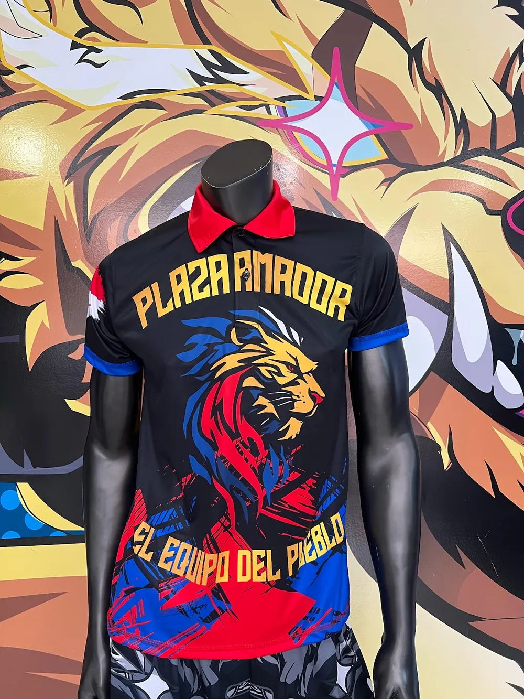
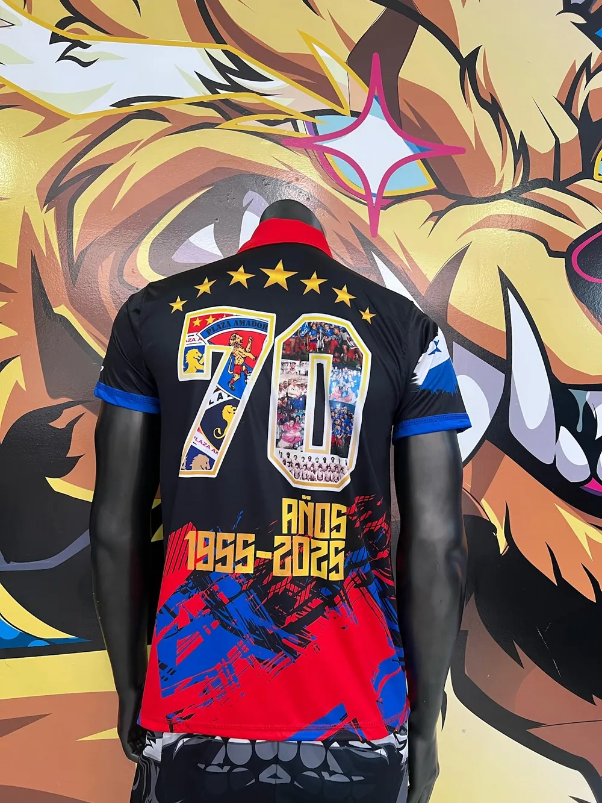
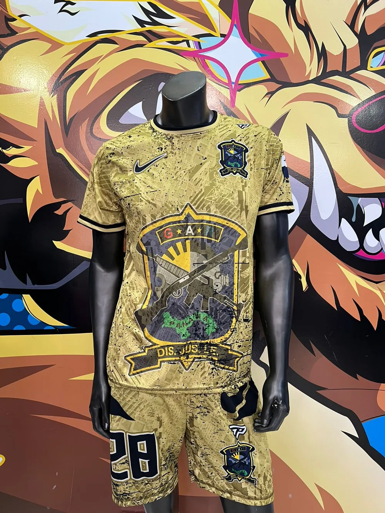
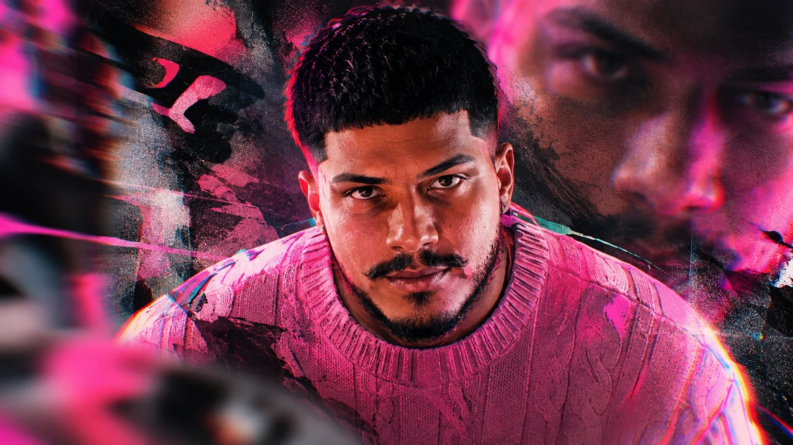

Acceso
total MEDIA PASS
2026 · Nº 0001
total MEDIA PASS
2026 · Nº 0001
- Diseñador
- Ezequiel Gomez
- Rol
- Diseño gráfico deportivo
- Acceso para
- Invitado
ZONA · ALL AREAS
Portafolio privado · Temporada 2026
Más de 600 equipos en Panamá ya salieron a la cancha con mis diseños. Fútbol, béisbol, vóleibol, pesca y básquet, sublimado full color. Si tu equipo va a estrenar, que estrene algo que nadie más en la liga tenga.
↓ Desliza
Pasa al vestuario. Pon el cursor encima de una camiseta y sale a la luz. Tócala para verla completa, de frente y de espalda.
Diseños reales, hechos en Panamá para clubes, empresas y torneos. Pasa el mouse por encima para frenarlos y toca el que te guste.




Los números no mienten.

El capitán · Nº 10 · Hecho en Panamá
Soy Ezequiel Gomez. Llevo 6 años diseñando uniformes para equipos de barrio, ligas, empresas y torneos en todo Panamá. Mi meta es simple: que tu equipo entre a la cancha y todo el mundo pregunte quién les hizo la camiseta.
Cómo trabajo
Del primer mensaje al día del estreno, sin enredos. Tú pones el equipo, yo pongo el diseño.
Por WhatsApp me cuentas los colores, el escudo, los patrocinadores y los nombres y números.
Por WhatsAppTe mando el mockup de frente, espalda y short para que el equipo lo vea antes de decidir.
Frente · espalda · shortCambiamos lo que haga falta hasta que el equipo diga «¡esa es!».
Hasta que te encanteTe entrego los archivos listos para sublimar y tu equipo sale a la cancha con algo que nadie más tiene.
Listo para sublimarEquipos y empresas que ya estrenaron conmigo. El próximo puede ser el tuyo.
Contacto · Cotizaciones
Cuéntame de tu equipo, empresa o torneo: cuántas prendas, los colores y para qué fecha. Te respondo en menos de 24 horas. Juntos hacemos el uniforme del que todos van a hablar en la liga.
eiker0405@gmail.com · +507 6875-0714 · @eegomezzzz